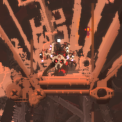
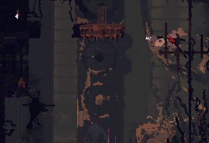

All current notes as of:
Subject:
Vultures
Observation 1: Nonorganic elements
Vultures, while being the apex predators of the skies, have a very characteristic sound accompanying their flight - that of jets. The local group is still trying to determine how much of thier body is mechanical. And which Iterator did it.
Observation 2: There are two known subclass of vultures: Base and King
Vultures can be classified into two subspecies: Base and King. King vultures are easy to differentiate by their more ornate masks with red patterns and horns of varying sizes. The most distinctive feature of Kings are their harpoon-like bones, one on each side of thier head, and laser pointer to help with finding possible prey.
Observation 3: Scavs have a class system
There are 3 main social classes in Scavenger Society: Scouts, Elites and The Chieftain. Scouts are the most common, othen seen in packs of 5 and stationed at Outposts or Merchant rooms. Elite Scavengers are specially trained military class, distinguished by thier colorful masks.The Chieftain is a de facto leader of the settlement, with a biggest mask adorned with pearls.
Overseer footage from node: (LP_1_PEB)



Scavengers trade with various items
The local group has dedicated a few cycles of time to anylize and compile the worth of each item in a simple scale o 1-10.